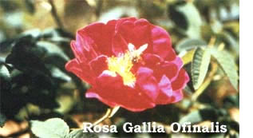
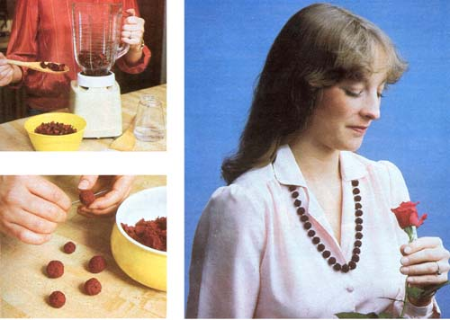

To make naturally aromatic necklaces, you'll need a few simple tools: an electric blender or a ceramic mortar and pestle . . . a saucepan (preferably glass, enameled, or-to make black beads-cast iron) . . . a wooden spoon . . . and a No. 1 or 2 knitting needle or a similar sharp, pointed object with which to make a hole through each bead. For materials, you'll need nylon monofilament line and several quarts of rose petals. You may also choose to use some rose oil to strengthen the scent, and a clasp to finish of your necklace.
The first step is the pleasant task of gathering rose petals. Try to get the strongest-smelling, "rosiest" blossoms you can obtain. Don't worry too much about color: As a rule, darker roses have a more powerful scent than lighter ones, but there are many deeply fragrant pink, white, and yellow varieties as well . . . and the beads will dry to a dark red, brown, or black, no matter what color the petals are. Once you've gathered the blossoms, pluck of the petals (about two quarts' worth) and put some into the electric blender. Add water -1/4 cup for every 2 cups of petals-and chop the mixture fine. (The nonelectric alternative to this procedure is to mash the petals in a ceramic mortar, and then to add water. This is the traditional way to do it . . . but a blender will save time.)
Now, heat the rose pulp in a saucepan over medium heat. The old recipes say to use a cast iron pot if you want your beads to turn black. (The iron oxidizes, and thereby darkens, the pulp.) However, my beads made from both red and yellow petals turned dark, dark red (almost black) without any special help. Whichever container you choose, do not boil the mixture, or its scent will be destroyed. Just stir it with a wooden spoon until it's the consistency of clay and doesn't stick to the side of the pan. At this point, remove the pot from the stove.
When the fragrant concoction is cool enough to handle, work and knead it with your fingers as if it were clay. If it seems too watery to shape, remove the excess moisture by pressing a paper towel to the pulp's surface.
If you're working with petals that are unscented or only lightly perfumed, you should put some rose oil on your fingertips just as you begin to form the beads so that the fragrance can seep into the little globes. Rose oil can be purchased at many health food stores. (EDITORS NOTE: Two outlets for authentic herbal products, including fragrance oils, are Herbal Effect (Dept. TMEN, P.O. Box 6, Carmel Valley, California 93924 . . . catalog $1.00) and Star Herbs, Etc. (Dept. TMEN, 1021 R Street, Sacramento, California 95814 . . . catalog free).] However, since in this instance the essence will be used for cosmetic purposes, synthetic rose oil-which, at about $6.00 an ounce, costs one-third the price of true rose oil-would also be quite suitable.
Now, roll around bits of the pulp to form balls about the size of marbles, or slightly larger, keeping in mind that the beads will shrink to half their original size during the drying process. It's possible to graduate the sizes from small to large and back again so that you'll wind up with the rose equivalent of a perfectly matched string of pearls.
After the globes are shaped, poke a hole through the center of each one with a fine knitting needle or similar bodkin . . . but be careful! The newly made bead may break apart when pierced. If this happens, reshape it firmly around the shaft of the needle, then gently pull the needle out.
Allow the beads to dry for at least two or three days, during which time they'll shrink and darken. Roll them over daily to insure that they dry evenly. Sometimes the hole in a bead shrinks and closes up entirely. To prevent this from happening, people often string the rounds-very carefully-onto clear nylon fishing line before setting them out to dry, and then slide them gently along the strand every day to keep the holes open.
When the rosy globes are thoroughly dry, they'll be (surprise!) rock hard. Polish them gently with a clean, soft cloth, and-if you haven't already done so-string them. If you've been able to form a large number of beads, you can make a long necklace that has balls all the way around and just slips over your head . . . otherwise, you might use a necklace clasp (available from most craft stores). To preserve their fragrance, wrap the beads in a soft cloth saturated with rose oil ... and always store them in a closed container.
It would seem that anything made from so fragile a substance as scented flower petals would disintegrate quickly . . . or at least lose its perfume. Such is not the case: One of MOTHER's editors spoke with a person who owns a rose-bead necklace that's 50 years old and still fragrant! Since they're so durable, why not use petals from special sources, rather than just from the garden or a local nursery? Consider roses from a bride's bouquet . . . from a triumphant theatrical debut . . . or from a friend or lover. Who knows what happy occasion will provide the material for a memento or heirloom that will evoke the feeling of love and warmth for which the queen of flowers is justly famous?
Trying to pick which scented rose to raise can give one pause, because the genus Rosa contains some 200 species, with mutations, hybrids, and cultivars numbering in the thousands. However, most modern roses hybrids that have been developed primarily to be disease-resistant while also producing superb blooms-are not especially aromatic. Consequently, the finest oils and perfumes are still derived from the exquisitely scented types of yesteryear. Chief among the latter are the Damask and Gallica roses, beloved for centuries and still the prime sources of true rose oil (about $20 per ounce) and its quintessence, attar of roses . . . which, at the current price of $720 per ounce, :'s more costly than gold.
Among the Damask roses are Celsiana, Madame Hardy, Rose de Rescht,and the common Rosa damascena bifera. The Gallicas boast the Apothecary Rose (Rosa Galicia officials), Belle de Crecy, Camaieux, Cardinal de Richelieu, and Tuscany Superb, as well as others. In addition to these two species, there are deeply fragrant Centifolias, Bourbons, Hybrid Perpetuals, Albas, and Rugosas . . . many of which can be purchased from Roses of Yesterday and Today, a company that specializes in old, rare, and unusual varieties.
Of the modern roses, the following are noted for their fragrance: American Pride, Angel Face, Chrysler Imperial, Crimson Glory, The Doctor, Fragrant Cloud, Granada, Perfume Delight, Sutter's Gold, Sweet Surrender, and Tiffany. Two major sources of such roses are the Jackson & Perkins Company .
|
 PHOTOS COURTESY OF ROSES OF YESTERDAY AND TODAY ABOVE: Rose petals are added, along with water, to the blender. BELOW.- After the pulp has cooled, the beads are rolled and pierced with a needle. These beads are fairly large. RIGHT.- The finished product! |
 STAFF PHOTOS |
|